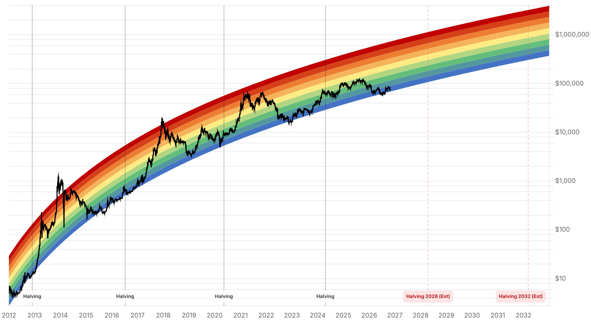

Reporte financiero
BTC cotiza en USD 80.710,31 en vivo (07:14 UTC), -0,46% frente al cierre anterior (USD 81.079,98), y acumula una caída de más de USD 3.300 (-3,9%) desde el cierre del martes 21 de octubre (USD 84.011,97) citado en el reporte de hace dos días -no hubo entrega el 23 de octubre-. El rechazo en la banda de USD 84.000-84.850 señalado entonces se confirmó con fuerza: el precio perdió la zona de USD 82.000-83.000 el 22 de octubre y volvió a caer por debajo de USD 81.000 tanto el 23 como el 24, en un contexto de crudo Brent por encima de USD 100 (renovados ataques a petroleros en el Estrecho de Ormuz) y cautela de mercado antes de la reunión de la Fed del 27-28 de octubre. El dato más relevante de estos dos días es la reversión abrupta en los flujos de ETF: tras tres sesiones consecutivas de entradas netas (lunes 19: +USD 526,6M; martes 20: +USD 23,2M; miércoles 21: +USD 528,4M -el dato que el reporte de hace dos días dejó pendiente de confirmar-, sumando en conjunto más de USD 1.080M), los ETFs spot de Bitcoin en EE.UU. registraron una salida neta de USD 635,49M el jueves 22 de octubre según SoSoValue, revirtiendo de golpe buena parte de la mejora de flujos de la semana. En el frente corporativo, Strategy confirmó en un filing del 19 de octubre la compra de 267 BTC por USD 22,1M (operada entre el 12 y el 18 de octubre a un precio promedio de USD 82.900), llevando sus tenencias totales a 848.517 BTC a un costo promedio histórico de USD 75.446 -por encima de las 848.250 BTC reportadas hace dos días-, financiada casi en su totalidad con ventas de acciones MSTR vía su programa ATM; la empresa también elevó de USD 2.000M a USD 3.000M el límite de su programa de recompra de acciones preferentes STRC. El plazo del 23 de octubre para que Cantor Fitzgerald respondiera al pedido de información del senador Blumenthal sobre su vínculo con Tether venció sin respuesta pública de ninguna de las dos partes. El Fear & Greed Index retrocedió con fuerza de 68 (Greed) a 51 (Neutral) -la mayor caída de esta serie de reportes diarios-, reflejando ahora sí la corrección de precio, a diferencia de hace dos días cuando el índice subía pese a la reversión. Analistas cripto consultados (Michaël van de Poppe, Alex Marzell, Ali Martinez, entre otros) coinciden en que perder el rango de soporte de USD 81.000-82.000 abriría la puerta a una caída más profunda hacia USD 75.000-79.700, mientras que una recuperación necesitaría reconquistar USD 84.000-86.500. Sin novedades en la apelación del fallo del Reino Unido sobre los 61.000 BTC incautados ni en la Clarity Act, que sigue estancada desde el fracaso de cloture del 15 de septiembre.
El cierre del martes 21 de octubre (USD 84.011,97, con un máximo intradía de USD 84.808 reportado hace dos días) resultó ser el techo del movimiento: el precio cayó a USD 81.311,89 al cierre del miércoles 22, a USD 81.074,19 al cierre del jueves 23 y cotiza en vivo en USD 80.710,31 (07:14 UTC del 24 de octubre, -0,46% intradía). La caída coincide con un crudo Brent por encima de USD 100 -por renovados ataques a petroleros en el Estrecho de Ormuz-, debilidad persistente en equities tecnológicas y cautela de mercado antes de la reunión de la Fed del 27-28 de octubre, en línea con los mismos factores de riesgo global que ya se señalaban hace dos días, ahora sostenidos en el tiempo en vez de revertir.
Se confirma el dato del miércoles 21 que el reporte de hace dos días dejó pendiente: entrada neta de USD 528,4M, la segunda más fuerte de la semana tras el salto del lunes 19 (USD 526,6M) y por encima del martes 20 (USD 23,2M) -en conjunto, más de USD 1.080M en tres sesiones consecutivas de entradas. Pero el jueves 22 de octubre los ETFs spot de Bitcoin en EE.UU. registraron una salida neta de USD 635,49M según SoSoValue, la reversión más brusca de flujos en esta serie de reportes. El detalle por fondo de esta salida no fue desglosado en las fuentes consultadas. El dato del viernes 23 todavía no está confirmado al momento de este reporte.
Un filing del 19 de octubre confirma la compra de 267 BTC por USD 22,1M, operada entre el 12 y el 18 de octubre a un precio promedio de USD 82.900 -por encima del precio spot actual-, financiada casi en su totalidad con ventas de acciones MSTR vía el programa ATM (140.872 acciones, ~USD 22M) y el resto en caja. Las tenencias totales suben a 848.517 BTC a un costo promedio histórico de USD 75.446 (USD 64.000M en total), por encima de las 848.250 BTC que citaba el reporte de hace dos días. Saylor acompañó el anuncio con el mensaje 'We found room for more orange' ('encontramos espacio para más naranja'). Además, la empresa recompró ~1,94M de acciones preferentes STRC por ~USD 193,1M y elevó de USD 2.000M a USD 3.000M el límite total autorizado para ese programa de recompra.
El plazo del 23 de octubre que el senador Blumenthal había fijado a Cantor Fitzgerald para responder a su pedido de información sobre el vínculo de la firma con Tether (incluyendo cómo Cantor supervisa el cumplimiento de sanciones de Tether y los términos de cualquier préstamo vinculado a la transferencia de la participación de Howard Lutnick a sus hijos) venció sin que ninguna de las dos partes emitiera una respuesta pública, según las fuentes consultadas al momento de este reporte.
A diferencia de hace dos días, cuando el índice subía a pesar de la reversión de precio de esa madrugada, ahora sí refleja la corrección sostenida de los últimos dos días: cae de 68 a 51, la mayor baja de esta serie de reportes diarios, pasando de la zona 'Greed' a 'Neutral'.
No se encontraron novedades sobre la apelación de Fieldfisher al fallo de la High Court británica (que determinó que rige la ley china, no la inglesa, en la disputa de propiedad sobre los 61.000 BTC incautados a Zhimin Qian), ni sobre la Clarity Act, que sigue estancada desde el fracaso de cloture del 15 de septiembre (49-50 votos) sin fecha de un nuevo intento de voto en el Senado.
| Periodo | Valor |
|---|---|
| 18 oct | 82017.6 |
| 19 oct | 81853.54 |
| 20 oct | 82941.0 |
| 21 oct | 84011.97 |
| 22 oct | 81311.89 |
| 23 oct | 81074.19 |
| 24 oct (en vivo) | 80710.31 |
| Periodo | Valor |
|---|---|
| Fear & Greed | 51 |

“It wouldn't be weird if the markets will see a deeper correction.”
“We found room for more orange.”
El rechazo en USD 84.000-84.850 señalado hace dos días se confirmó plenamente: el precio no solo no logró sostenerse, sino que perdió también el siguiente nivel de soporte (USD 82.000-83.000) y ahora cotiza por debajo de USD 81.000. Analistas como Alex Marzell y Ali Martinez identifican la banda de USD 81.000-82.000 como soporte clave de corto plazo -su pérdida sostenida abriría la puerta a una caída hacia USD 75.000-79.700-, mientras que una recuperación necesitaría reconquistar USD 84.000 y luego USD 86.500. El catalizador dominante sigue siendo el apetito por riesgo global (crudo por encima de USD 100, equities tecnológicas débiles) de cara al apagón de comunicaciones de la Fed antes de la reunión del 27-28 de octubre.
La reversión de flujos de ETF -de USD 1.080M de entradas en tres días a una salida de USD 635,49M el 22 de octubre- es el dato más relevante para la lectura de demanda institucional de octubre, y templa de forma significativa la narrativa de recuperación sostenida que se perfilaba hace dos días. El dato del viernes 23, aún no confirmado, será clave para saber si la salida del jueves fue puntual o el inicio de una tendencia. El rango de consenso de QCP Capital para el Q4 (USD 80.000-90.000) sigue vigente, aunque el precio actual (USD 80.710) ya se ubica en el extremo inferior de ese rango.
Sin cambios en los objetivos de precio de largo plazo ya reportados en ediciones anteriores (Citigroup, Bernstein, Standard Chartered, Tom Lee, NYDIG, Armstrong). Strategy reafirma su tesis de acumulación corporativa con una nueva compra (267 BTC) y una ampliación de su capacidad de recompra de STRC, aunque el precio promedio de esta última compra (USD 82.900) ya quedó por encima del spot actual. En el frente regulatorio/legal: el plazo del 23 de octubre para Cantor Fitzgerald venció sin respuesta pública, por lo que el próximo hito a vigilar es si el senador Blumenthal escala el pedido; la apelación del fallo británico sigue con resolución esperada en 2027; y la Clarity Act sigue sin fecha de reintento en el Senado.
A diferencia de la reversión intradía de hace dos días, la caída actual ya lleva dos cierres diarios consecutivos por debajo de USD 81.000, confirmando el rechazo en la zona de resistencia de USD 84.000-84.850. Analistas señalan USD 75.000-79.700 como el siguiente tramo de soporte si la zona actual no se sostiene.
La salida de USD 635,49M del 22 de octubre revirtió de golpe tres días de entradas netas (USD 1.080M en conjunto). El dato del viernes 23, aún no publicado al momento de este reporte, es clave para saber si se trata de un evento aislado o el inicio de una tendencia de salida más amplia.
La nueva compra de Strategy (267 BTC a un precio promedio de USD 82.900) se operó antes de la caída actual y ya cotiza por encima del spot de hoy (USD 80.710). Es una señal de convicción de largo plazo de la compañía, no un indicador de que el precio actual cuenta con un piso de demanda corporativa inmediato.